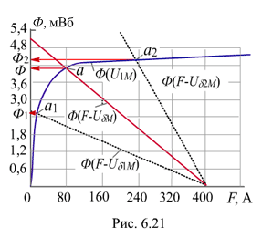

6.3.2.3. Влияние длины воздушного зазора на вебер-амперную характеристику магнитной цепи
Магнитное сопротивление Rd воздушного зазора прямо пропорционально длине зазора d и при d = 0,5…1 мм соизмеримо или больше магнитного сопротивления RM ферромагнетика при его длине, равной 0,5...1 м. Поэтому с увеличением d уменьшается магнитный поток Ф в магнитной цепи, увеличивается магнитное напряжение UdM на зазоре. Это ведёт к линеаризации вебер-амперной характеристики Ф(F) магнитной цепи, что упрощает в отдельный случаях её расчет.
Определим магнитные потоки в зазоре магнитной цепи упражнения 2 при уменьшении и увеличении воздушного зазора d в два раза. Проведя прямые линии из точки F = 400 А (см. график рис. 6.20) к точкам Ф01 = F / R1M = 2,5 мВб и Ф02 = F / R2M = 10 мВб (рис. 6.21), получим точки пересечения а1 и а2 прямых с характеристикой F / R1M. Ординаты точек а1 и а2 определяют искомые магнитные потоки Ф1 » 2,38 мВб и
Ф2 » 4,4 мВб.